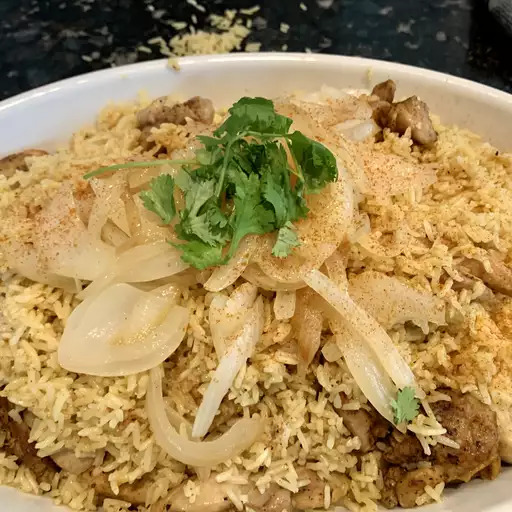

Chicken Biryani

Description
Chicken biryani is a delicious Pakistani/Indian rice dish that's typically reserved for special occasions such as weddings, parties, or holidays such as Ramadan. It has a lengthy preparation, but the work is definitely worth it. For biryani, basmati rice is the ideal variety to use.
Ingredients
- Oil
- Potato
- Onion
- Masala
- Yogurt
- Rice
- Chicken
Steps
- Gather all ingredients.
- Heat 2 tablespoons of oil in a large skillet. Fry potatoes in hot oil until lightly browned.
- Add remaining 2 tablespoons of oil to the skillet. Add onions, garlic, and fresh ginger; cook and stir until onion is soft and golden.
- Stir in yogurt, mint, ground cardamom, and cinnamon stick. Cover and cook over low heat, stirring occasionally, until tomatoes are cooked to a pulp.
- Add chicken and stir well to coat. Cover and cook over very low heat until chicken is tender, 35 to 45 minutes.
- Meanwhile, make the rice: Wash rice well and drain in a colander for at least 30 minutes.
- Heat oil in a large skillet. Add onion; cook and stir until golden. Add cardamom pods, cloves, cinnamon stick, ground ginger, and saffron; stir in rice until coated with spices.
- Heat stock and salt in a medium pot until hot; pour over rice and stir well.
- Add chicken mixture and potatoes; stir gently to combine. Bring to a boil.
- Reduce heat to very low, cover with a tight-fitting lid, and steam for 20 minutes without lifting the lid or stirring.
- Spoon biryani onto a warm serving dish.